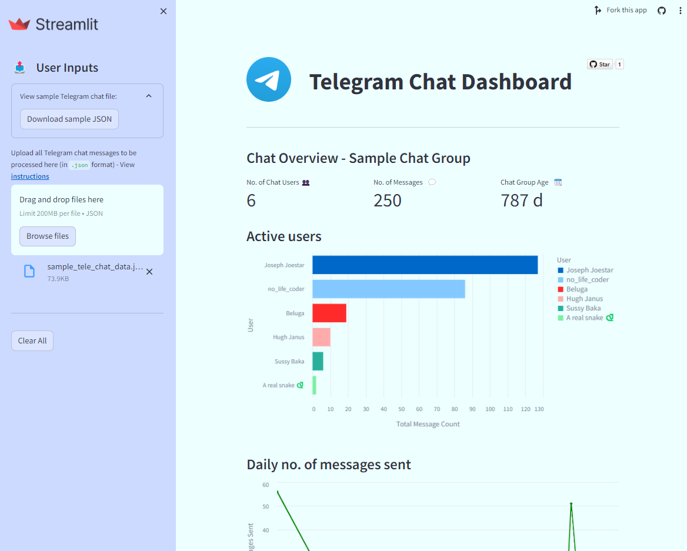

Streamlit Projects
Here are some of my projects written in the Python programming language using the Streamlit library in Python to create interactive web applications. While Streamlit Community Cloud is generous with their free hosting services, there may also be resource limits and some apps may exceed these limits, occasionally crashing the web app.
GPA Calculator - for NUS students

GPA used to be known as CAP (Cumulative Average Points) but that’s a minor semantic difference that no one actually cares about. This application perhaps has the most real-world usage of all my web apps. It allows students of NUS (National University of Singapore) to keep track of their modules in a very convenient way, by allowing .xlsx files with NUS modules to be created, processed, and updated. Users can then get a detailed breakdown on the modules they have taken and their respective grades. However, since this app is heavily reliant on the NUSMods API which is maintained by a separate team of programmers (of which I am not one of), it may be subject to occasional breaks and crashes. If there are any visible bugs or edge cases, please do not hesitate to notify me!
Telegram Message Dashboard

This is a fun and interactive web dashboard which shows details about users and messages in a particular Telegram chat group. This was my first foray into learning some CSS and JSON to make the dashboard as detailed and easy to understand as possible. I also learnt a bit about data visualisation and NLP (Natural Language Processing). Below are instructions for usage:
- To use the dashboard, you must have Telegram Desktop installed.
- After installation, navigate to the individual/group chat you want to view the details of, and click the three dots at the top right hand corner of the chat, then click ‘Export chat history’.
- Make sure to change the export format from HTML to JSON before downloading. It is optional to download Photos, Videos etc. as the app only understands text messages.
The app has quite a few limitations, such as not being able to recognise emojis in the sentiment analysis section and not being able to process chat files greater than 200 MB. Nevertheless, it can still provide interesting insights about your Telegram group chat!
SQL Sandbox

This is my attempt at making a website similar to sqlzoo.net where users can practise their SQL skills in a sandbox environment based on the given question prompt. I initially tried using a MySQL server on my computer for the database, but ran into connection problems. However, I wasn’t ready to give up yet and managed to mimic a MySQL server with only serverless .db and .sqlite3 files. I learnt a lot about different SQL operations and the various DBMS that may use differing syntax. There are currently only 3 questions available for practice, so feel free to add more on the GitHub page for the app!
Foreign Exchange Rates (Forex)

This project started initially started out as a work project during my first audit internship. I was doing some vouching for the exchange rate reasonableness test and there was a particular variance which was significant. In the process of finding alternate exchange rate sources, I discovered exchangerate.host, a free web API for current and historical foreign exchange rates published by the European Central Bank. I seized this opportunity to whip up a foreign exchange rate web application which allows users to download monthly and daily exchange rates between two different currencies. The API is well-maintained, and has a wide range of world currencies and even gold prices and Bitcoin rates. While I only used my web app once for work in my entire internship, I still feel proud of what I accomplished and learned in the process.
Machine Learning (Classification) - Audit Risk Dataset

This is my first project in Python that makes use of the scikit-learn library in Python. The app allows users to select the type of classification model (KNN, Random Forest etc.) trained on historical data from diverse firms, where fraudulent activities were previously detected during audits. By analysing a range of features, such as financial indicators, transaction patterns, the app attempts to create a machine learning model that can accurately predict the whether a firm is fraudulent based on the selected parameters. Users can adjust the parameters to see how the results of the model change each time. The dataset is from Kaggle.
Machine Learning (Regression) - Insurance Dataset

Besides the classification models mentioned previously, I also created another web app which aims to accurately predict insurance charges for an individual based on several input factors, such as age, BMI, number of children etc. and used the scikit-learn library to determine the accuracy and precision of the regression model (such as linear, ridge etc.) to predict charges. It has a simple and intuitive UI which also allows users to adjust parameters to view how the results of the model change with different input parameters. The dataset I used for this application is also from Kaggle.
Genshin Impact Gacha Wish Simulator

This was actually one of the first web apps I built in Streamlit, but I revamped it to include more features and improve the design and layout of the app. It is based around drop rates of different banners in the hit game Genshin Impact. It consists of two major parts: The first part is a data visualisation of the probability distribution drop rates of 5★ characters/weapons which changes based on the number of pulls since obtaining a 5★ character, and the second part allows users to simulate their chances of obtaining a 4/5★ character based on their user inputs. This app was the first time I used the matplotlib package to create a relatively large web application, and I also had to brush up on my probability and statistical knowledge to ensure that the theoretical probability values matched up with what was happening in-game. An issue with the first app was that communication with players could be a challenge as average players could not fully understand why the data plots were as such, so I subsequently added more detailed yet straightforward explanations to the app which gave it a better reception.